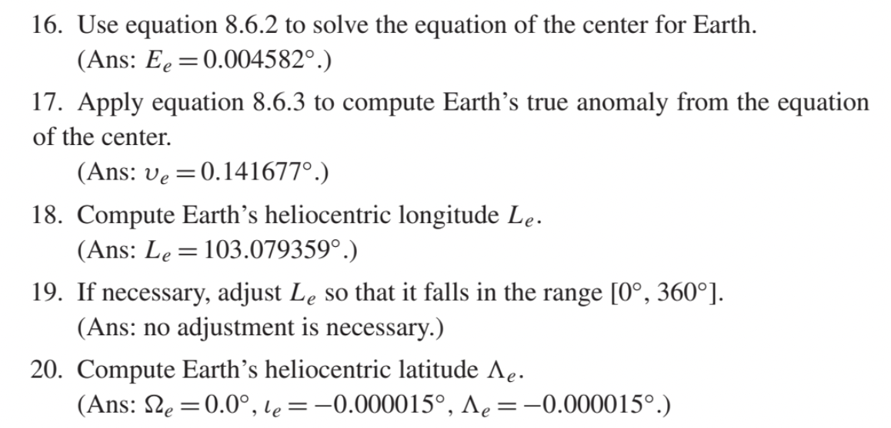

Modelling the Cosmos in Ruby
The sky is a lie
We see what's in the past
Sunrise and sunset times are fake
The Pole Star is not at the celestial pole
A day is not 24 hours
Build an accurate astronomy library with that

Hi, I'm Rémy
Senior developer at thoughtbot
In love with astronomy
Let's meet and talk about food code
What are we going to talk about?
Complex domain models
Learn code design techniques
Code readability for collaboration and education
Context: Astronoby
Astronomical data and events accessible in Ruby
Position of planets in the sky 🪐
🌅 Rising, transit and setting times 🌄
Equinoxes and solstices times ☀️
Moon phases 🌙
Future:
Conjunctions, oppositions
Eclipses
Deep sky objects
Stargazing planner
Increase scientific support in the Ruby ecosystem
Approach
Good idiomatic Ruby code
Readable and educational code
Domain-Driven Design
and OOP
in Astronoby
Why?
Azimuth: 123°44′47″
Altitude: 49°26′13″


Solar System Barycenter
Vector
Light-time
Precession
Nutation
Aberration
Deflection
Earth shape
Terrestrial time
Barycentric position
Geocentric astrometric position
Geocentric apparent position
Topocentric apparent position
Equatorial coordinates
Horizontal coordinates
How to deal with a large and complex domain?
Domain-Driven Design
Introduced in 2003 by Eric Evans
Reflects business domain
Focus on core domain
❌
Technical layers
Large exhaustive models
Uniform objects
✅
Business concepts
Multiple models with explicit boudaries
Entities and value objects
Ubiquitous Language
Ubiquitous Language
❌
class MoonState
def self.compute(state, time)
new(
time: time,
state: state
)
end
end
✅
class MoonPhase
def self.full_moon(time)
new(
time: time,
phase: FULL_MOON
)
end
end
When DDD?
Complex domain
Collaboration
DDD in Astronoby
Repositories
Ephem
Ephem
ephem = Astronoby::Ephem.load("de440s.bsp")
ephem[0, 3].position_vector_at(2460819)
# => Vector[-71204709, -123739936, -53612310]
Domain services
RisingTransitSettingEvents
MoonPhases
RisingTransitSettingEvents
calculator =
Astronoby::RisingTransitSettingEventsCalculator.new(
observer: observer,
target_body: Astronoby::Sun,
ephem: ephem
)
events = calculator.events_on(date)
events.rising_time
# => 2025-05-23 05:54:08 +0200
Value objects
Angle
Instant
Distance
Angle
angle = Astronoby::Angle.from_degres(240).hours
angle.hours
# => 16.0
angle.cos
# => -0.5
Entities
Jupiter
Observer
Jupiter
jupiter = Astronoby::Jupiter.new(
ephem: ephem,
instant: instant
)
jupiter.apparent.distance.km
# => 904241448
Value objects
Replaces primitives
Encapsulates data
No or little behaviour
Time
time = Time.now
time.hour
# => 16
time.to_i
# => 1747917900
distance1 = Distance.from_meters(1000)
distance2 = Distance.from_kilometers(1)
distance1 == distance2
# => true
distance3 = distance1 + distance2
distance3.to_meters
# => 2000
Comparable, #<=>, #+
Data
Without value object
declination_radians = declination_degrees * Math::PI / 180
latitude_radians = latitude_degrees * Math::PI / 180
ha_radians = ha_hours * 15 * Math::PI / 180
term = Math.sin(declination_radians) *
Math.sin(latitude_radians) +
Math.cos(declination_radians) *
Math.cos(latitude_radians) *
Math.cos(ha_radians)
altitude_degrees = Math.asin(term)
Astronoby::Angle
term = declination.sin * latitude.sin +
declination.cos * latitude.cos * ha.cos
altitude = Angle.asin(term)
From maths to Ruby

Celestial Calculations by J. L. Lawrence
Identify responsibility
equation of the center for Earth
Earth's true anomaly from the equation of the center
Domain service
Earth's heliocentric longitude
Entity
adjust [...] so that if falls in the
range [0°, 360°]
Value object
The importance of precision
Angular distances
1 circle
360 degrees (°)
Each degree
60 arc-minutes
Each arc-minute
60 arc-seconds
1 circle
1,296,000 arc-seconds
Full Moon
0.5°
0° 30' 0"
Mars at its closest
0.007°
0° 0' 25"
Precision is important in science
It's time for some data typing theory 🎉
Integer
Infinite precision
Until your computer runs out of memory
Float
Double-precision floating-point (IEEE 754)
Rounding errors
0.1 + 0.2 # => 0.30000000000000004
Rational
Exact representation of fractions
1/10.0 + 1/10.0 + ... + 1/10.0 # => 0.9999999999999999
1/10r + 1/10r + ... + 1/10r # => 1
BigDecimal
Arbitrary precision decimal numbers
require "bigdecimal"
1.2345678901234567890123
# => 1.2345678901234567
BigDecimal("1.2345678901234567890123")
# => 0.12345678901234567890123e1
Difference between
1.234567890123456°
1.234567890123457°
smaller than any instrument resolution
Pluto's angular size
0.00003°
Deimos' angular size
0.00000008°
Rounding error
0.00000000000000004
Astronomical models or instruments will fail before Ruby is imprecise
Performance
Things that can harm performance
Inefficient algorithms
Redundant or unnecessary operations
Non optimized critical methods
Lack of fine-tuned tools in the ecosystem
Astronoby suffers from performance issues
0.4 seconds mean time for sunrise/sunset times and position
Many ways to improve the performance
Cache repetitive operations
Better algorithms
Optimized algorithms
It is fine to not use DDD or OOP when it's too heavy-weight
Consider writing C modules for critical parts